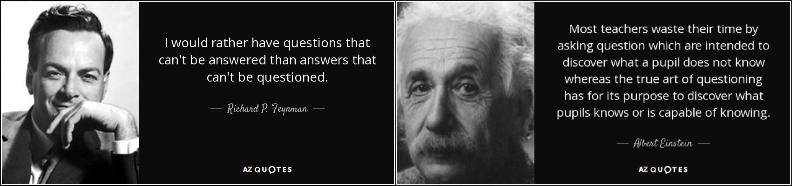

Research Interests
- 
Much of the increasing complexity of ICT systems is being driven by the more distributed and heterogeneous nature of these systems, with Cyber-Physical Systems accounting for an increasing portion of Software Ecosystems. This basic premise underpins the research conducted by Dr. Panichella in the COSMOS H2020, ARIES and BioAI4LCMS Innosuisse, Innoguard Horizon, Aerialist and Safe-2-fly Hasler Stiftung, and the SwarmOps SNSF projects, which focus on blending best practices DevOps/MLOPs solutions with the development processes used in the CPS and ACPS context: this will enable the CPS/ACPS world to deliver software more rapidly and result in more secure and trustworthy systems. These brings together a balanced consortium of big industry, SMEs and academics which will develop enhanced DevOps/MLOps pipelines that target the development of CPS/ACPS software. The DevOps/MLOPs pipelines will be validated against several use cases provided by industrial partners representing the healthcare, avionics, automotive, micromobility, utility, railway sectors, and other sectors. These will act as reference use cases when promoting the technology amongst Open Source and standardization communities. More information about the ongoing and past projects: https://spanichella.github.io/projects.html Information on some of the papers accepted on the projects: [B1, B2, B3, J34, J33, J32,J31, J30, J29, J28, J27, J24, J23, C70, C69, C68, C67, C66, C64, C62, C61, C60, C59, C58, C57, C56, C55, ...].
Machine learning (ML), Genetic Algorithms (GA), and Generative AI (GenAI) deals with the issue of how to build computer programs that
improve their performance at some tasks through experience. These algorithms have proven to be of great practical
value in a variety of application domains. Not surprisingly, the field of software engineering turns out to be a fertile
ground where many software development and maintenance tasks could be formulated as learning problems and approached in terms
of learning algorithms.
Work in progress. Dr. Panichella investigated (see papers accepted) the potential of using such Algorithms for solving SE and real world problems.
He started to study them during the PhD studies. Examples of the successful application of ML and genetic algorithms to SE
problems by Panichella are bug prediction, code (and code change) prediction [J5, J8, C30,C25, C22, C7, ...], prioritization or clustering of user reviews
(in the context of mobile apps) [J15, J13, C45, C38, C37, C36, C34, C29, C28, GE2, GE1, ... ] , test case generation [J12, C48, C47, C46, C41, C35, C22, ...], etc..
More recent and ongoing research directions in this topic are toward experimenting customized solutions based on ML and Genetic Algorithms for enhancing
traditional testing approaches and GUI testing processes [C35, C34], identifying class comment types in multi-language projects [J21] ,
supporting qualitative characterization and automated prediction of issue labels in Github [J28, J20, J17, C42, .. ], monitoring
vulnerability-proneness of Mobile Apps and other systems [J19] .
Finally, emerging research concerned solutions for autonomous systems and other AI-enabled systems [B1, B2, B3, J34, J33, J32, J31, J29, J28, J23, C62, C61, C60, C59, C58, C57, C55, ...].
Emerging topics. Current investigations also explore the role of Large Language Models (LLMs) for tasks such as automated code repair, requirements analysis, and conversational interfaces
in software engineering. Explainable AI (XAI) techniques are being integrated to increase transparency of ML-based predictions and improve developer trust.
In addition, Responsible and Ethical AI frameworks are being studied to mitigate bias and ensure fairness in software systems.
Another promising research trend is the application of AI for Sustainability, where intelligent algorithms are leveraged to optimize energy efficiency, reduce computational costs,
and support greener software development practices.
These directions represent the intersection of AI with real-world societal and industrial challenges, extending the traditional scope of ML and GA in software engineering.
Continuous delivery (CD) is a software engineering approach in which teams produce software in short cycles,
ensuring that the software can be reliably released at any time. It aims at building, testing, and releasing
software faster and more frequently. The approach helps reduce the cost, time, and risk of delivering changes
by allowing for more incremental updates to applications in production. A straightforward and repeatable
deployment process is important for continuous delivery. Continuous Integration (CI) consists in a specific
stage of CD process where team members integrate their work in an automatic manner, which allows a fast
building, testing, and releasing of software, leading to multiple integrations per day.
Researchers in this field have as main focus the development of recommender systems able to provide
suggestions and automated support to developers and testers during Continuous Integration activities.
Work in progress. Dr. Panichella is very interested (see papers accepted) in investigate and overcome contemporary limitations
of DevOps (e.g., continuous delivery and continuous integration) practices and tools for complex systems
(e.g., Cloud and Cyber-physical systems). In the context of CI Dr. Panichella is currently conducting empirical work
to understand the problems that developers face when integrating new changes in the code base [C34, C31, ...] .
The main focus is the development of recommender systems able to provide suggestions to developers and testers during
Continuous Integration activities. In recent work he also investigated strategies to optimize test case generation in
CI pipelines [J12, J7, ...], contemporary bad practices affecting CI adoption [J11, ...], technical debt analysis for Serverless [J16, ...] ,
the cloudification perspectives of search-based software testing [C41, C46, ...] , approaches to measure structural coupling for
microservices [C50] , and how developers engage with static analysis tools in different development contexts (i.e., Code
Review, CI, local development) [J14, ...].
On going research concerns branch coverage prediction and test case generation [J30, J7, C35, ...], improving the readability of automatically
generated Tests [C47, C21, ...], test smells in automatically generated tests [C48, J25, ...], and exploring the integration of
user Feedback in Automated Testing of Android Applications [C34, C35, ...]. Finally, emerging research
concerned Continuos Delivery and Continuos Integration practices in cyber-physical systems [B1, B3, J34, J33, J32, J31, J29, J27, J23, C70, C69, C68, C67, C66, C64, C63, C62, C61, C60, C59, C58, C57, C55, ...].
Beyond traditional DevOps challenges, emerging topics in MLOps and DevOps are gaining attention. These include
continuous training (CT) and continuous deployment of machine learning models, addressing challenges like data drift,
reproducibility of experiments, and automated monitoring of models in production. Researchers are investigating
scalable pipelines that unify CI/CD with ML workflows, ensuring reliable delivery of AI-driven services. Other
promising areas include infrastructure-as-code for ML systems, fairness-aware deployment pipelines, security and
compliance automation, observability in hybrid cloud-edge environments, and DevOps for Large Language Models (LLMOps).
These developments aim to extend the principles of CI/CD beyond software, fostering trustworthy, adaptive, and
efficient pipelines for intelligent and data-driven applications.
Empirical software engineering is a sub-domain of software engineering focusing on experiments on software systems (software products, processes, and resources). It is interested in devising experiments on software, in collecting data from these experiments, and in devising laws and theories from this data. Proponents of experimental software engineering advocate that the nature of software is such that we can advance the knowledge on software through experiments only. The scientific method suggests a cycle of observations, laws, and theories to advance science. Empirical software engineering applies this method to software. Work in progress. In past work Dr. Panichella performed empirical studies (see papers accepted) to understand (i) how OSS communities upgrades dependencies [C10, J4, ...]; (ii) to what extent static analysis tools help developers with code reviews [, ...]; (iii) how developers' collaborations identified from different sources vary when they are mined from different sources [, ...]; (iv) how the evolution of emerging collaborations relates to code changes [C14, C11, ...]; (v) comment evolution and practices in Pharo Smalltalk [J18, ...]; or (vi) to study the behaviour of developers during maintenance tasks or pull requests development (e.g., while they modify existing features or fix a bug) by analyzing their navigation patterns [C43, C9, ...]. Currently Dr. Panichella is focusing his attention in performing empirical work to understand possible ways to measure and foster developer productivity during testing [C21, ...], maintenance and code reviewing tasks [J22, J14, C9, ...] as well as investigating how developers discuss about code comments in social media [C54, ...] or how do communities in developer interaction networks align with Subsystem Developer Teams [C51, ...]. Finally, emerging empirical research concerned development practices and safety in cyber-physical systems and other intelligent systems [J34, J32, J31, J28, J27, J24, C70, C69, C68, C67, C66, C64, C63, ...]
Empirical software engineering is a sub-domain of software engineering focusing on experiments on software systems (software products, processes, and resources). It is interested in devising experiments on software, in collecting data from these experiments, and in devising laws and theories from this data. Proponents of experimental software engineering advocate that the nature of software is such that we can advance the knowledge on software through experiments only. The scientific method suggests a cycle of observations, laws, and theories to advance science. Empirical software engineering applies this method to software. Work in progress. In past work Dr. Panichella performed empirical studies (see papers accepted) to understand (i) how OSS communities upgrade dependencies [C10, J4, ...]; (ii) to what extent static analysis tools help developers with code reviews [, ...]; (iii) how developers' collaborations identified from different sources vary when they are mined from different sources [, ...]; (iv) how the evolution of emerging collaborations relates to code changes [C14, C11, ...]; (v) comment evolution and practices in Pharo Smalltalk [J18, ...]; or (vi) to study the behaviour of developers during maintenance tasks or pull requests development (e.g., while they modify existing features or fix a bug) by analyzing their navigation patterns [C43, C9, ...]. Currently Dr. Panichella is focusing his attention in performing empirical work to understand possible ways to measure and foster developer productivity during testing [C21, ...], maintenance and code reviewing tasks [J22, J14, C9, ...], as well as investigating how developers discuss about code comments in social media [C54, ...] or how communities in developer interaction networks align with Subsystem Developer Teams [C51, ...]. Finally, emerging empirical research concerns development practices and safety in cyber-physical systems and other intelligent systems [J34, J32, J31, J28, J27, J24, C70, C69, C68, C67, C66, C64, C63, ...], with growing attention on (vii) AI-assisted software engineering and how large language models impact code generation, reviews, and testing workflows [C72, J36, ...]; (viii) DevOps and continuous delivery practices where automation pipelines and infrastructure-as-code reshape empirical investigations of productivity [C74, ...]; (ix) socio-technical and ethical aspects of collaborative software development, including diversity, inclusion, and responsible AI integration [J38, ...]; and (x) sustainability and green software engineering, exploring energy efficiency and environmental impact in software systems [C75, J39, ...].
Peer code review, a manual inspection of source code by developers other than the author, is recognized as a valuable tool for reducing software defects and improving the quality of software projects. In 1976, Fagan formalized a highly structured process for code reviewing, based on line-by-line group reviews, done in extended meetings--code inspections. Over the years, researchers provided evidence on code inspection benefits, especially in terms of defect finding, but the cumbersome, time-consuming, and synchronous nature of this approach hinders its universal adoption in practice. Nowadays, many organizations are adopting more lightweight code review practices to limit the inefficiencies of inspections. In particular, there is a clear trend toward the usage of tools specifically developed to support code review. Modern code reviews are (1) informal (in contrast to Fagan-style), (2) tool-based, and (3) occurs regularly in practice nowadays, for example at companies such as Microsoft, Google, Facebook, and in other companies and OSS projects. Work in progress. The research focus of Panichella is to develop recommender systems (see papers accepted) able to (better) support developers during the code review process. Hence recent effort was devoted in automatically configure static analysis tools during code review activities as well as investigation the relevant changes and automation needs of developers in modern code review [J22, J14, C15...].
Textual analysis can be described as the examination of a text in which an educated guess is formed as to the most likely interpretations that might be made of that text. It is where the researcher must decentre the text to reconstruct it, working back through the narrative mediations of form, appearance, rhetoric, and style to uncover the underlying social and historical processes, the metalanguage that guided the production. It is suggested that textual analysis can cover four main underlying constructs: language and meaning, ideology, ideology and myth, and historicity. In this sense, textual analysis is a methodology: a way of gathering and analysing information in academic research (Mckee, A 2001). Work in progress.Panichella studied text analysis approaches since his bachelor and master studies and was always fascinated by the great usability of Natural Language Processing (NLP) and Information Retrieval (IR) tools and techniques for solving several practical problems. He adopted such techniques in several work during his PhD and also during the postdoctoral experience. He is currently learning new techniques and tools based on Textual Analysis (e.g. WORD2VEC) and neural networks techniques. He also proposed an NLP-based tools for software artifacts analysis to explore the natural language structures in software informal documentation or to detect inconsistencies between documentation and code. Moreover, he created the first international Workshop on Natural Language-Based Software Engineering Workshop (NLBSE), which was/is collocated with ICSE 2022, ICSE 2023, ICSE 2024. to know more about NLBSE, see the web page of the event in 2024: https://nlbse2024.github.io/
Traceability has been defined as "the ability to describe and follow the life of an artefact (requirements, code, tests, models, reports, plans, etc.), in both a forwards and backwards direction". Thus, traceability links help software engineers to understand the relationships and dependencies among various software artefacts (requirements, code, tests, models, etc.) developed during the software lifecycle. The two main research topics related to the traceability management are event-based systems for traceability management and information retrieval based methods and tools supporting the software engineer in the traceability link recovery.
- Monolithic and Cloud Applications - Cyber-physical systems (drones, robots and self-driving cars)